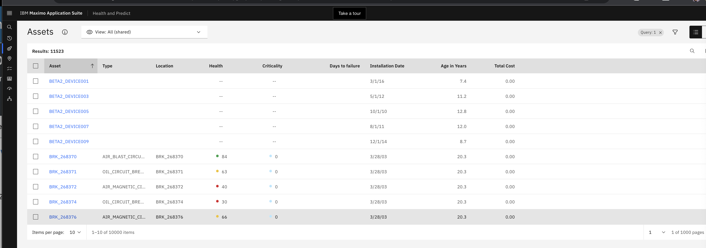
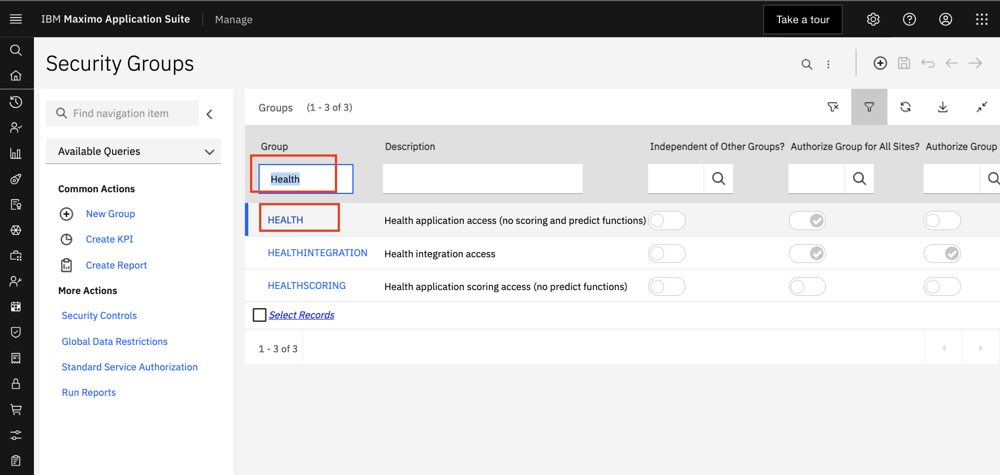
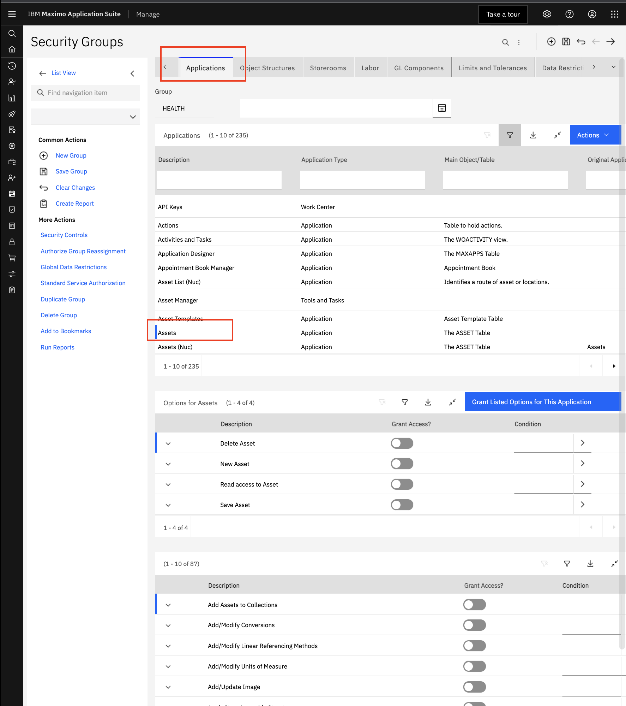

Build MAS Health and Predict Demonstration
Follow the steps in this lab in your own environment to create the necessary components to deliver the Maximo Application Suite (MAS) v9 Health and Predict Demo Script. The data for your system can be provided by the instructor or you can create your own assets too for some of the exercises.
- Login to MAS Applications
- Setup Health Asset Permissions
- Setup Default Health Asset Condition Scores
- Create an Asset
- Setup Health Score Groups
- Create a Score Group
- Create score type
- Create group using Custom Scoring Methodology
- Create custom matrix
- Plan replacement plan template for Substation Transformers
- Create investment project
To keep track of the items that you create, append your initials to the end of the name, so that they’ll be easy to find and delete.
Prerequisites
This lab requires the following:
- A working MAS environment with Maximo Manage, or another Enterprise Asset Management (EAM) system, Maximo Health, Maximo Health and Predict, IBM Maximo Models for Electrical Distribution and Maximo Optimizer installed.
- Sufficient asset data to run the analysis and get insights
- User id with application access to
Healthapplication. - User id with access to a site. Otherwise you will get a warning
This user doesn't have access to any site. Site access is required to access ASSET object
Login to MAS Applications
Launch Health on the Applications tab. If Health tile is not present on applications tab, ask your MAS admin has to enable it.
- After you login using the credentials provided by your instructor, navigate to the
- From the main MAS page, select the
Applicationstab
- Click the
Launchlink on theManage,HealthorPredicttile. To setup permissions in the next exercise you will go to Manage. - This displays the assets grid page with a table of assets and their health scores for the user's currently assigned site. 
**Note if the user isn't assigned to a site they will not see any assets. **
Setup Health Asset Permissions in Manage
In order to allow users to edit source record on Action button on the Health asset details page you must first configure the Health application security groups in Manage using the steps below.
- Go to Manage Application.
- Choose the
Security groupapplication. - Search on the
HEALTHgroup and clickenterkey.  - Click the
Applicationstab. - Select
Assets - Click the
Grant listed options for the application - Enable options for asset actions

- Click
Save Group.
- Go back to
Healthapplication and login using the user to ensure the operation is now possible.
Setup Default Health Asset Condition Scores
Maximo Health v9 includes the ability to automatically active Asset Condition scoring for all assets that don't belong to a score group. After you activate the default asset condition scores, any new asset you create will also use the out of the box default score group to calculate asset condition for Health Risk and Criticality. Asset that are already part of score group will be skipped.
Watch the video on Default Asset Condition Scores
Activate the Default Score
In this exercise you enable the Default Score.
- After you Log into IBM Maximo for the first time you will be reminded to enable the
Default Score. - Press the
ActivateButton to enable the Default Scores. - Make sure you have create assets and they have the required dependencies set. An Asset Priority, Work orders or Service Requests set against the asset. Asset installation date and asset expected life based on Manufacture.
- Optionally you can choose to
activate the scores later. Go toSetting GroupandGroupstab to find theDefault_Scoregroup to enable it. - Check the group to see if the default scores have been activated. You will see Health, Risk and Criticality calculated for all your assets.
Asset scores will begin to be calculated using the Default_Score group. You can also verify if the scoring is working by
viewing assets using the Asset Table List page. If the Health, Risk ad Criticality score don't apper it likely because
there data missing for it to be calculated. You can bulk update missing data for Installation Date in the Asset Table
List page simply by clicking on the column and row asset value and entering the information in the pop up dialog.
You can also view the Asset Condition Scores for Health, Risk and Criticality on the Asset Details page.
Create an Asset
In this exercise you create an asset in IBM Maximo Manage. You will use this asset later to measure it's Meantime Between Failure and see how it's value performs versus other assets using a Chart.
In order for the Meantime Between Failure Score to be calculated you also are required also create an unscheduled emergency work order. Let's start by first creating the asset and then a work order.
To create an example asset for Meantime Between Failure score make sure you enter the following asset fields:
- Asset Number: "AH016"
- Description: "Submersible pump 20 hp rotary"
- Asset Type: "Pump"
- Status: Active
- Installation Date: 6/1/20
- Expected Life: 10 ( Manufacture suggested life - 20% for example)
- Vendor: Armstrong
-
Manufacturer: Armstrong
-
Log into IBM Maximo. Open IBM Maximo Application Suite.
- Open your web browser and navigate to the IBM Maximo login page.
- Enter your
usernameandpasswordto log in. -
Launch
Manageon theApplicationstab. IfManagetile is not present onApplicationstab, ask your MAS administrator to enable it for your user id. -
Navigate to the
AssetModule. Select toAssetModule. From the main Maximo menu, selectAssets > Assets. -
Create a New Asset:
-
Open
New AssetForm. In theAssetmodule, click on theNew Assetbutton to open theasset creationform. -
Fill in Asset Details:
-
Enter
Asset Number. In theAsset Numberfield, enter a unique identifier for the asset (e.g., AH016). - Enter
Description. In theDescriptionfield, enter a detailed description of the asset (e.g., Submersible pump 20 hp rotary). - Select
Asset Type. Locate theAsset Typefield and select the appropriate type from the dropdown menu (e.g., Pump). - Enter
Installation Date. Enter thedatethe asset was installed. Use the date picker to select the date (e.g., 2024-05-21). - Enter
Vendor Information. In theVendorfield, enter the name of the vendor from which the asset was purchased (e.g., Siemens). - Enter
Manufacturer Information. In theManufacturerfield, enter the name of the manufacturer of the asset (e.g., ABB). -
Enter
Expected Lifein Years. In theExpected Lifefield, enter the expected operational life of the asset in years (e.g., 20). -
Save the
Asset. After filling in all the required fields, click theSavebutton to create the asset record in Maximo. -
Click
Saveto store the new asset record. -
Select the asset status to
Active: -
From the
Common Actionsmenu on the left, find theStatusmenu to launch the status Form. - Choose
Activefrom theNew Statusdropdown menu and clickSavebutton.
Setup Health Score Groups
When you first login to the Health Application, there is a universal table list view of all managed assets.
Scores that are shown in this view, and others, are created from the Scoring Settings section on the left nav bar.
-
Hover over the left nav bar to expand it. Select the
Scoring Settingssection on the left nav bar -
Create a scoring group by choosing assets that have similar behavior.
Groupsare bound to anasset query.
If there are any scoring groups already created, they will appear on the Groups tab of the Scoring settings page.
- Scroll through the pages to see what groups have already been created.

There are 2 ways to create asset condition scores in Maximo Health. The first way is using the Maximo Formula Engine.
The second way is use Watson Studio to customize the Jupyter notebook templates provided in Maximo Health or accelerators .
Each asset class has it's own notebook template. See the documentation
for the list of asset classes IBM provides. You can configure the Score Settings using a text file with a .cfg
extension to specify how to calculate Asset Health, Risk and Criticality.
Alternatively, scoring methodologies can be created from scratch directly in the UI.
Create a Scoring Group
To create a score group for Substation Transformers, click the Create a scoring and DGA group button, and complete the form.
- Click the
Create a scoring group +button. - Complete the open fields for
NameandDescription. - Select the radio button for
assetto identify theObject. - Select the radio button
Connecting group to notebookin response toConfigure scoring and DGA by. - Click
Selectto pick a notebook.
- When prompted, scroll and select the
IBM Transformers Tap Changers DGA 6.0.1. - Click
Use notebook.
Pick a Query
To identify which assets each notebook your formula engine setting are applied to a the group of assets you must pick a asset query. In this case select, substation transformers.
- Click
selectto pick a query.
- When prompted, scroll and select the
EUORG1_EUDEMO_ST - Click
Apply
- Click
Create
Activate Score
Once created, the group will display. The next step is to activate each of the scoring methodologies from the notebook.
- Click each score in sequence, starting at the top.

- On each
scorescreen, review the scoring methodology, and selectActive.
- Use the breadcrumb to return the
Scoring Grouppage. - Ensure that all of the scores are
Active.
Create Score Type
To create your own asset conditions scores, you can use custom score from the UI, return to the Scoring Settings page by clicking the breadcrumb at the top of the page.
Select the Score types tab on the page to create a new score type. Existing score types will display on the page.
- Click the
Scoring Settingsbreadcrumb at the top of the page.
- Select the
Score typestab.
- Click the
Create new score typebutton.
Create a New Score Type
Complete the form for the new custom score type. The score type can be customized with new ranges, colors and icons.
- Complete the open fields for
NameandDescription. - Leave the remaining fields as they default.
- Click
Save.

- Return to the
Groupstab to set up the custom score methodology. Select theGroupstab.
Create Group for Using Custom Score Using Notebooks
Create a Scoring Group
Follow similar steps as those using the notebook to create a custom score methodology for substation transformers in this case, a proxy for efficiency.
- Click the
Create a scoring and DGA groupbutton.
- Complete the open fields for
NameandDescription. - Select the radio button for
assetto identify theObject. - Select the radio button
Building scoresin response toConfigure scoring and DGA by. - Click
selectto pick a query.
- When prompted, scroll and select the
EUORG1_EUDEMO_ST. - Click
Apply. - Click
Create.
Add Score Type
Once created, the group will display. The next step is to create the custom score methodology itself.
When adding a score type, existing score types with appear, including the Substation Efficiency just created.
- Click the
Add scorebutton.
- Select
Substation Efficiencyfrom the score options. - Click
Done.
Add Contributor
From the Substation Efficiency score page, the custom score methodology can be built using various contributors, formulas, or groups.
- Click the
+in the contributor section of the page.
- From the
Add a contributorpopup, select the tileFACAGESAMPLE. - Click
Add.
Add Contributor Weight
For this example, only one contributor is used, but often there will be several contributors. Therefore, a weight must be assigned to each contributor. In this case, 100%.
Value: The ability to create custom scores, with any data available, allows the user to account for unique operating environments and conditions.
- Click the
Pencilicon.

- In the popup, change the % weight to
100. - Click
Save.
- Change the
Activebutton toYes.

Create Custom Matrix
View Matrix
Now that the score methodologies are built, and active, scores will appear in multiple views.
To use the custom score in a matrix, a custom matrix must be created.
- Hover over the left nav bar to expand it.

- Select the
Assetssection on the left nav bar to return to the table view. - Click the
Matrixicon to move to the matrix view.
Configure Matrix
To customize the matrix, click the setting icon in the upper right of the screen. Adjust the fields so that Health
appears on the y-axis, and Substation Transformer Efficiency on the x-axis.
- Click the
cogsymbol.

- In the
Namefield, typeSubstation Efficiency and Health. - In the
Y-axisfield, selectSubstation Efficiency. - Select the
100-0radio button underY-axis direction. - In the
X-axisfield, selectHealth. - Select the
100-0radio button underX-axis direction.
Also, fill in the colors of the matrix so that the assets with poor health and poor efficiency appear red or high in the upper right corner.
- Click
Highradio button.

- In the Matrix, click on the upper right box to turn it red.

- Continue with
MediumandLowto complete the matrix view to match the example.
- Click
Save asto save the matrix and set it as the default.
Create Replacement Plan Template for Substation Transformers
Replacement Plan Templates
The matrix provides a good view from which to select assets for an investment project. However, a plan template must be complete for any asset class in a project. To set up a plan template, go to the Asset investment optimizer tab.
- Hover over the left nav bar to expand it.
- Select the
Asset investment optimizersection on the left nav bar.
- Click the
Plan templatestab.
- On the
Plan templatestab, click the+symbol to create a new plan template.
Create an Asset Replacement Template
Complete the form for the replacement plan template.
- Select
SUBSTATION_TRANSFORMERfrom the selection list or other asset class. Note if there is already a replacement plan template for an asset class, a new one cannot be created - In the open field, type
Sample replacement plan template for Substation Transformer - Select
ReplacementforPlan type. - Enter
8forExpected downtime in hours. - Enter
50000forEstimated capital cost. - Enter
30000forEstimated operating cost. - Enter
150000forEstimated failure cost. - Enter
30forExpected life in years. - Click
Create.
- Hover over the left nav bar to expand it.
- Select the
Assetssection on the left nav bar to return to the matrix view.
Create Investment Project
Assign Assets
To assign a set of substation transformers to an investment project from the matrix page, filter the assets, and
drill down to the table view and add assets to a project.
- Use the pulldown, and select
Substation Transformers (shared)from the list.
- Select the
redbox in the matrix to show the table view of the assets.
- From the table view, select
50from the pulldown at the bottom of the table. - Select the
boxat the top of the page to select all of the assets on the table.
- Select
Create investment project.
Create a Project
Complete the form on the Create a project page.
- In the open field, type
ST Demo Project. - In the Summary field, type
Demo project for Substation Transformers. - Enter
25forDuration in years. - Select
2QforTarget start quarter. - Enter
2023forTarget start year. - Click
Create
- Once the
ST Demo Projectpage appears, hover over the left nav bar to expand it. - Select the
Assetssection on the left nav bar to return to the matrix view to add more assets to the project.
Add Assets from the Matrix
From the matrix view, drill down once more to the table view and add additional assets to the project.
- Select the
yellowbox in the middle top row of the matrix to show the table view of the assets.
- From the table view, select
50from the pull down at the bottom of the table. - Select the
boxat the top of the page to select all the assets on the table.
- Select
Add to investment project.
From the popup, select the ST Demo Project to add the new set of assets to the existing project.
- Select
ST Demo Projectfrom the set of projects.
- Click
Add - From the
Edit projectpage, clickSave.
- Click
Savefrom theConfirm savepopup.
Create and Run Investment Strategies
To test different investment strategies, move to the Asset investment optimizer tab to create the first strategy
Maintain risk.
- Hover over the left nav bar to expand it.
- Select the
Asset investment optimizersection on the left nav bar. - From the
Projectstab, click onST Demo Project.
- Click the
+to create the first strategy.
- From the popup, make sure the
Strategyselection isMaintain risk, the clickCreate.
Once the strategy is created, run the analysis. It may take some time to complete. The user can leave the screen and the analysis will continue to run.
- Click
Run analysis
Create the second investment strategy Reduce risk and run it.
- Click the
+to create the second strategy.
- From the popup, set the
Strategyselection isReduce risk. - Set the
Target risk scoreto7. - Click
Create.
- Click
Run Analysis.
Create the third investment strategy Stay in budget and run it.
- Click the
+to create the third strategy.
- From the popup, set the
Strategyselection isStay in budget. - Set the
Opexto810000. - Set the
Capexto1350000. - Click
Create.
- Click
Run Analysis.
Meantime Between Failure
To calculate the count of how many assets are achieving or not achieving the meantime to failure requires that you specify threshold goal to achieve. For example what is the number of hours an asset needs to go to achieve the meantime of failure goal. Assets who have a meantime between failure less than the number of hours means they are failing earlier than required and therefore aren't meeting the meantime between failure. Meantime between failures is calculated using the amount of time an asset goes before it has an unscheduled work order. Where the work order is either a corrective maintenance or emergency maintenance. The meantime between failure is calculated by summing the total amount of time between installation and the first and subsequent unscheduled work order divided by the total number of unscheduled worker order occurrences.
Create Threshold on Charts Page
To create a meantime between failure threshold consider the group of assets that you are measuring performance for. Consider creating separate thresholds for a groups of similar expected performance assets within an asset class like pumps and other thresholds for assets that are part of a system and require similar performance considerations like an HVAC system.
For this exercise you will create a MTBF performance threshold for an asset class. You can use pumps that have a similar
asset class, type, manufacture and model. There are two ways to create Thresholds. One is on the Asset Charts page,
If you haven't previously created any Thresholds. The other way to create them by going to the Score Settings page.
- Navigate to the
Asset Chartspage. - Click
Create thresholdbutton. - Fill in the form values and click the
Savebutton. - Select the
boxat the top of the page to select all of the assets on the table. - Select
Create investment project.
Create Threshold on Score Settings Page
Create a Threshold anytime by navigating to the Score Settings After you create the threshold it will be made
available as an option on MTBF chart on the Charts page.
- Navigate to the
Score Settingpage. - Click
Funnelbutton. - Select the previously created Threshold you want to use for the current
Viewand click theSavebutton.
The other way to create them by going to the Score Settings page.
- Navigate to the
Asset Chartspage. - Click
Create thresholdbutton. - Fill in the form values and click the
Savebutton. - Select the
boxat the top of the page to select all of the assets on the table. - Select
Create investment project.
Add Required Data on Asset Details
To calculate an asset's meantime between failure (MTBF), the asset's installation date must be known. Assets that are unable to
display their MTBF value will show an i icon in the MTBF column and asset row in Asset Table Page or on the value card of
the Asset Details Page. By clicking on the i icon, a dialog will open where you can set the installation date. Suggested
values for the installation date are also provided.
- Navigate to an
Asset DetailsPage - Click the an
iicon on the MTBF value card. - Choose the installation date using the
Calendarcontrol inf the dialog. If you don't know the installation date consider using the suggested value of when the asset was first added to Maximo. - Click
saveto save the installation date. - The MTBF value card will be updated when the MTBF calculation is recalculated in the
crontask.
Add Required Data on Asset Table
- Navigate to an
Asset TablePage - Click the an
iicon on the MTBF value card. - Choose the installation date using the
Calendarcontrol inf the dialog. If you don't know the installation date consider using the suggested value of when the asset was first added to Maximo. - Click
savebutton to save the installation date. - The MTBF value card will be updated when the MTBF calculation is recalculated in the
crontask. You will see a status message letting you know the value will be calculated.
Troubleshoot MTBF
If an asset's MTBF value doesn't appear in the Asset Details page or Asset Table page after you have entered and the asset's installation date
and the crontask has run then check to see if there are any filters applied to the crontask that remove your asset from
the list of assets to be calculated for MTBF.
- Navigate to the
crontaskin Manage. - Search on
MTBFand click on theMTBF crontask. - Review the
crontask parametersto see if the value would descope your asset from being calculated. - Remove or correct any filters that my descope your asset from being included in the MTBF score calculation task.
and click the
savebutton to save thecrontasksettings.
Summary
Congratulations. You now have completed the MAS v8.11 Health and Predict Demo setup lab and are ready to demo.